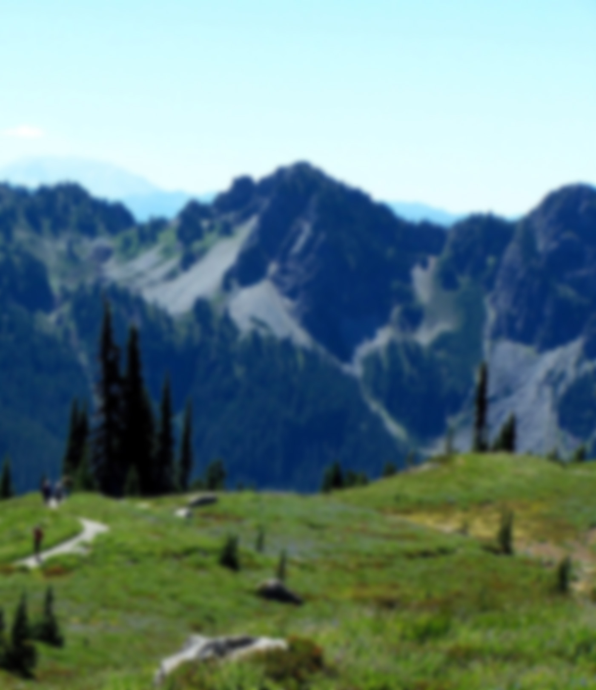
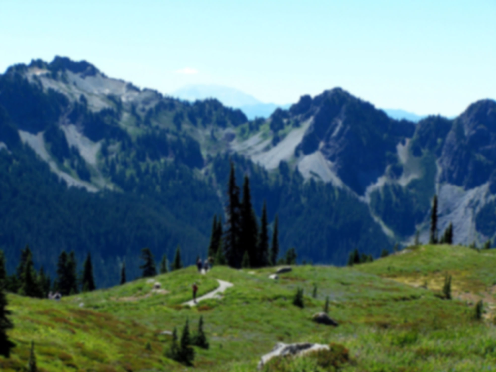
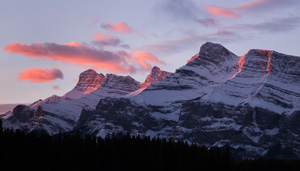

Overview
The Cascade Range (or Cascades) is a major mountain range of western North America, extending from southern British Columbia through Washington and Oregon to Northern California. It includes both non-volcanic mountains, such as the North Cascades, and the notable volcanoes known as the High Cascades. The small part of the range in British Columbia is referred to as the Canadian Cascades or, locally, as the Cascade Mountains. The highest peak in the range is Mount Rainier in Washington at 14,411 feet (4,392 m).
The Cascades are part of the Pacific Ocean's Ring of Fire, the ring of volcanoes and associated mountains around the Pacific Ocean. All of the eruptions in the contiguous United States over the last 200 years have been from Cascade volcanoes. The two most recent were Lassen Peak from 1914 to 1921 and a major eruption of Mount St. Helens in 1980. Minor eruptions of Mount St. Helens have also occurred since, most recently in 2005.

Geography
The Cascades extend northward from Lassen Peak in northern California to the confluence of the Nicola and Thompson rivers in British Columbia. The Fraser River separates the Cascades from the Coast Mountains. The highest volcanoes of the Cascades, known as the High Cascades, dominate their surroundings, often standing twice the height of the nearby mountains. The highest peaks, such as the 14,411-foot (4,392 m) Mount Rainier, dominate their surroundings for 50 to 100 miles (80 to 161 km).
The northern part of the range, north of Mount Rainier, is known as the North Cascades in the United States. Overall, the North Cascades and Canadian Cascades are extremely rugged; even the lesser peaks are steep and glaciated, and valleys are quite low relative to peaks and ridges, so there is great local relief. The southern part of the Canadian Cascades, particularly the Skagit Range, is geologically and topographically similar to the North Cascades.
Because of the range's proximity to the Pacific Ocean and the region's prevailing westerly winds, precipitation is substantial, especially on the western slopes due to orographic lift, with annual snow accumulations of up to 1,000 inches (25,000 mm) in some areas. Mount Baker in Washington recorded a world-record single-season snowfall in the winter of 1998–99 with 1,140 inches (29,000 mm). Annual rainfall is as low as 9 inches (230 mm) on the eastern foothills due to a rain shadow effect.
The western slopes are densely covered with Douglas-fir, western hemlock, and red alder, while the drier eastern slopes feature mostly ponderosa pine, with some western larch and subalpine fir at higher elevations.

The Columbia River Gorge is the only major break of the range in the United States. When the Cascades started to rise 7 million years ago in the Pliocene, the Columbia River drained the relatively low Columbia Plateau. As the range grew, erosion from the river kept pace, creating the gorge and major pass seen today.
History
In early 1792 British navigator George Vancouver explored Puget Sound and gave English names to the high mountains he saw. Mount Baker was named for Vancouver's third lieutenant, Joseph Baker, although the first European to see it was Manuel Quimper, who named it "La gran Montaña del Carmelo" in 1790. Mount Rainier was named after Admiral Peter Rainier. Mount Hood was named after Lord Samuel Hood, an admiral of the Royal Navy. Vancouver's expedition referred to the range simply as the "eastern snowy range." Earlier Spanish explorers called it sierra nevadas, meaning "snowy mountains."
In 1805 the Lewis and Clark Expedition passed through the Cascades on the Columbia River, which for many years was the only practical way to pass that part of the range. They were the first non-indigenous people to see Mount Adams, but they thought it was Mount St. Helens. Lewis and Clark called the Cascade Range the "Western Mountains." The earliest attested use of the name "Cascade Range" is in the writings of botanist David Douglas.

The Barlow Road was the first established land path for U.S. settlers through the Cascade Range in 1845, and formed the final overland link for the Oregon Trail. The road was constructed as a toll road — $5 per wagon — and was very successful. In addition, the Applegate Trail was created to allow settlers to avoid rafting down the Columbia River.
With the exception of the 1915 eruption of remote Lassen Peak, the range was quiet for more than a century. Then, on May 18, 1980, the dramatic eruption of Mount St. Helens shattered the quiet and brought the world's attention to the range. Geologists were also concerned that the eruption was a sign that long-dormant Cascade volcanoes might become active once more, as in the period from 1800 to 1857 when a total of eight erupted.